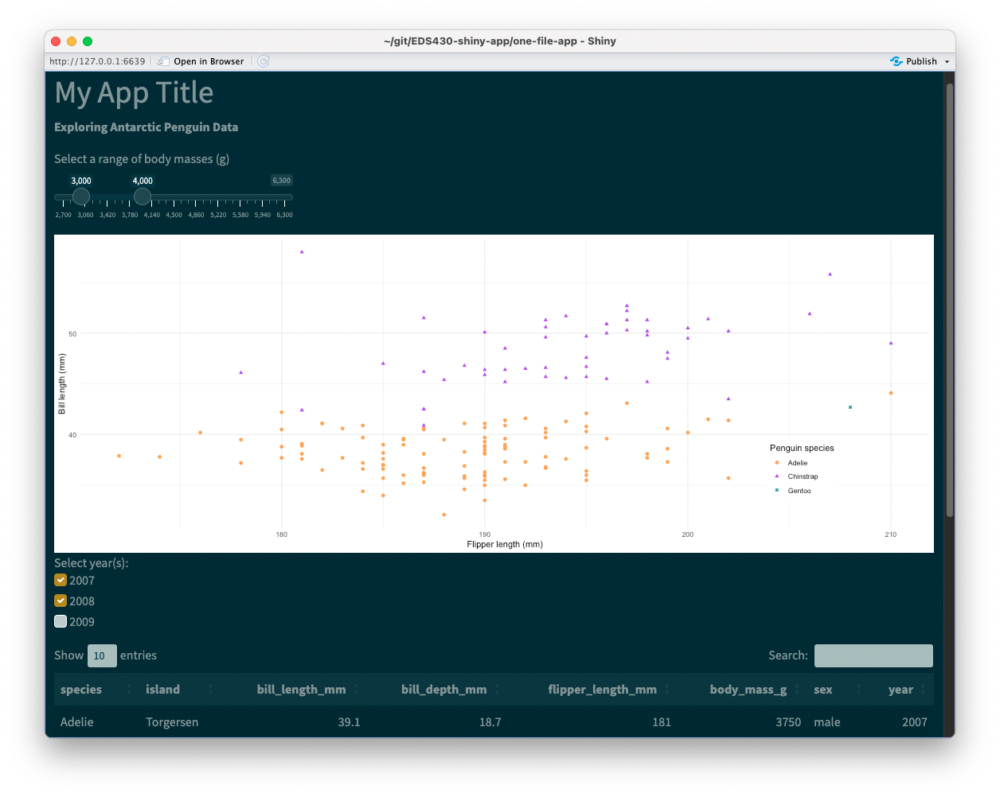
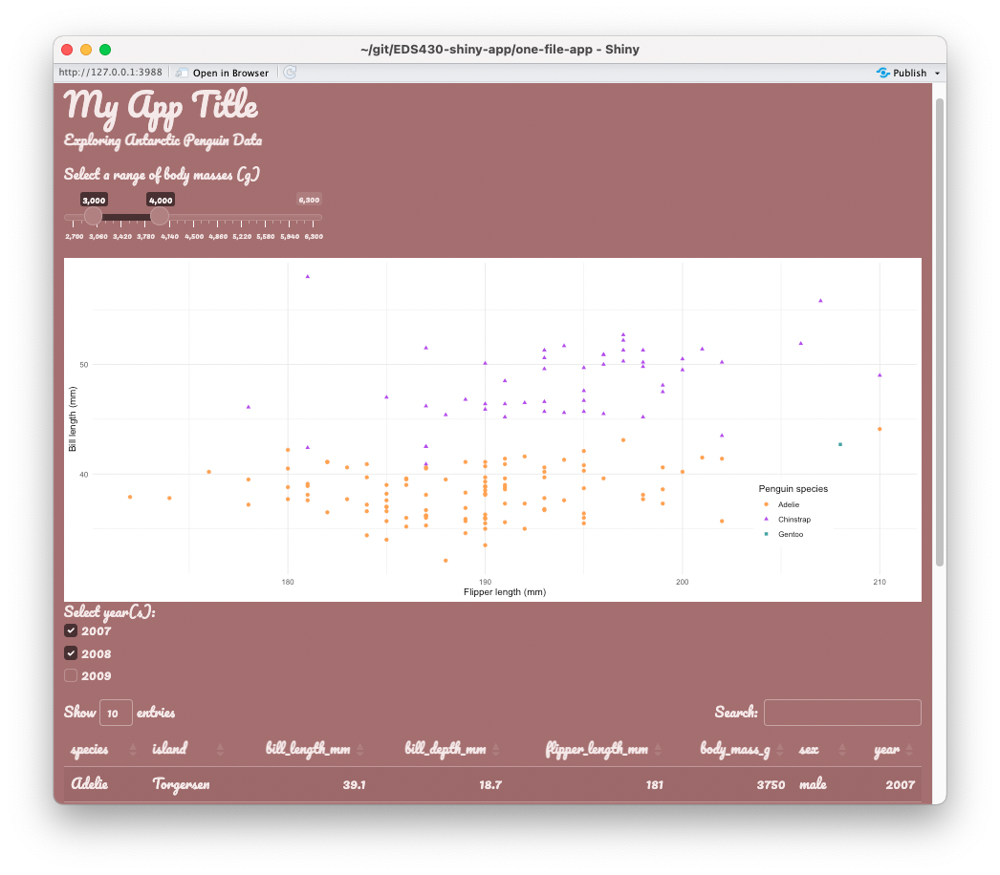
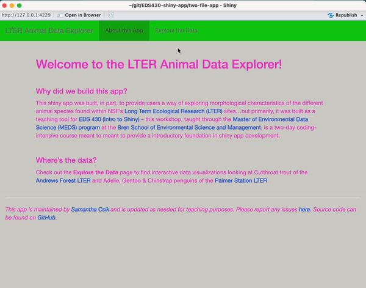
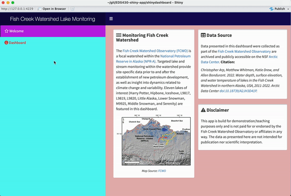

Use {bslib} for shiny apps
EDS 296: Part 4.1
Theming and styling apps with {bslib} & {fresh}
Creating custom themes
We’ve built some really cool apps so far, but they all have a pretty standard and similar appearance. In this section, we’ll explore two packages for creating custom themes for your apps.
Learning Objectives - Theming/Styling Apps
By the end of this section, you should be equipped with:
an understanding of how to use packaged-based tooling for theming and styling your shiny apps and dashboards
Packages introduced:
{bslib}: provides tools for customizing Bootstrap themes directly from R for shiny apps and RMarkdown documents
{fresh}: provides tools for creating custom themes for use with shiny, shinydashboard, and bs4Dash apps
{bslib} & {fresh} both provide tooling for theming your applications
We won’t cover all the major differences here, but you’ll often find the following recommendations:
Use {bslib} for shiny apps
fluidPage(), sidebarLayout()) are styled using Bootstrap, a popular front-end framework for designing responsive web applications. The {bslib} package provides tools for modifying Bootstrap variables.
{bslib} practice
Let’s start by applying a pre-built Bootswatch theme to our single-file-app using {bslib}, then create / apply a more customized theme.
Apply a pre-built theme with {bslib}
Apply a pre-built bootswatch theme using bs_theme() (for a list of theme names, run bootswatch_themes() in your console):

Create a custom theme with {bslib}
Alternatively, you can customize your own theme. Explore the {bslib} pkgdown site for detailed instructions. A small example here:
~/single-file-app/ui.R
library(shiny)
library(bslib)
# ~ additional libraries omitted for brevity ~
ui <- fluidPage(
theme = bs_theme(
bg = "#A36F6F", # background color
fg = "#FDF7F7", # foreground color
primary = "#483132", # primary accent color
base_font = font_google("Pacifico")),
# ~ additional UI code omitted for brevity ~
)Check out the complete source code for App #1 (NOTE: applied themes are commented out).

Be sure to check out the interactive theming widget to test custom color / font / etc. combos by running bs_theme_preview() in your console, or visit the hosted version. You can also call bs_themer() within your server function to open the theme customization UI alongside your own app.
{fresh} practice
We can use {fresh} to theme both shiny apps and dashboards, and the process is a little bit more involved than using {bslib}. Let’s practice on both our two-file-app and our shinydashboard
A general workflow for using {fresh} themes
Whether you’re working on a shiny app or a shiny dashboard, you’ll need the following:
(1) a www/ folder within your app’s directory – this is where we’ll save the stylesheet (a .css file) that {fresh} will generate for us
(2) a separate script for building our theme using the create_theme() function – I recommend saving this to scratch/ (it seemed to cause issues when saved anywhere within my app directory)
Importantly, create_theme() takes different variables to set the parameters of your theme, depending on what type of app you’re building: for shiny apps, you’ll need to use bs_vars_* variables, and for shiny dashboards you’ll use adminlte_* variables (examples on the following slides).
There are also a couple ways to apply your finished theme to your app, but we’ll use the method of generating a .css file, then calling that file in our app.
Creating a {fresh} theme for two-file-app
In this example, we update the colors of our app’s body, navbar, and tabPanels using the appropriate {fresh} variables for shiny apps. We specify a file path, two-file-app/www (you’ll need to create the www/ directory, since we don’t have one yet), where our stylesheet (e.g. app-fresh-theme.css, as shown here) file will be saved to. Of course, these color combos are not recommended, but chosen purely for demonstration purposes .
~/scratch/create-fresh-theme-app.R
# load library ----
library(fresh)
# create theme -----
create_theme(
theme = "default", # you can supply a bootstrap theme to begin with
bs_vars_global( # global styling
body_bg = "#D2D0CA", # beige
text_color = "#F23ACB", # hot pink
link_color = "#0E4BE3" # royal blue
),
bs_vars_navbar( # navbar styling
default_bg = "#13CC13", # lime green
default_color = "#66656C" # gray
),
bs_vars_tabs( # tab styling
border_color = "#F90909" # red
),
output_file = "two-file-app/www/app-fresh-theme.css" # generate css file & save to www/
)Apply a {fresh} theme to our app
To apply our theme, provide the theme argument of your fluidPage() or navbarPage() with the name of our stylesheet. Note: shiny knows to look in the www/ directory, so you can omit that from your file path, as shown below:

Creating a {fresh} theme for our shinydashboard
In this example, we update the colors of our app’s header, body, and sidebar using the appropriate {fresh} variables for shiny dashboards. We specify a file path, shinydashboard/www/ where our stylesheet (e.g. dashboard-fresh-theme.css, as shown here) file will be saved to. Again, these color combos are not recommended, but chosen purely for demonstration purposes.
~/scratch/create-fresh-theme-dashboard.R
# load libraries ----
library(fresh)
# create theme ----
create_theme(
# change "light-blue"/"primary" color
adminlte_color(
light_blue = "#150B5A" # dark blue
),
# dashboardBody styling (includes boxes)
adminlte_global(
content_bg = "#E7B5B5" # blush pink
),
# dashboardSidebar styling
adminlte_sidebar(
width = "400px",
dark_bg = "#57F8F3", # light blue
dark_hover_bg = "#BF21E6", # magenta
dark_color = "#F90000" # red
),
output_file = "shinydashboard/www/dashboard-fresh-theme.css" # generate css file & save to www/
)Apply a {fresh} theme to our dashboard
To apply our theme, use the fresh::use_theme() function inside your dashboardBody, providing it with the name of your stylesheet. Note: shiny knows to look in the www/ directory, so you can omit that from your file path, as shown below:

End part 4.1
Up next: fully custom themes using CSS & Sass
05:00